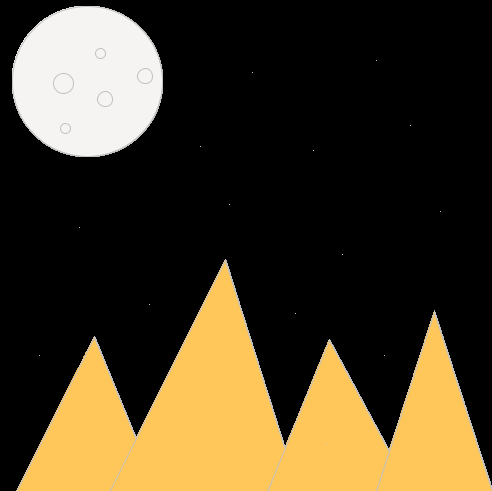
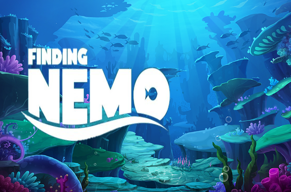
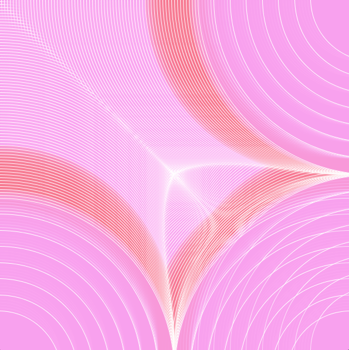
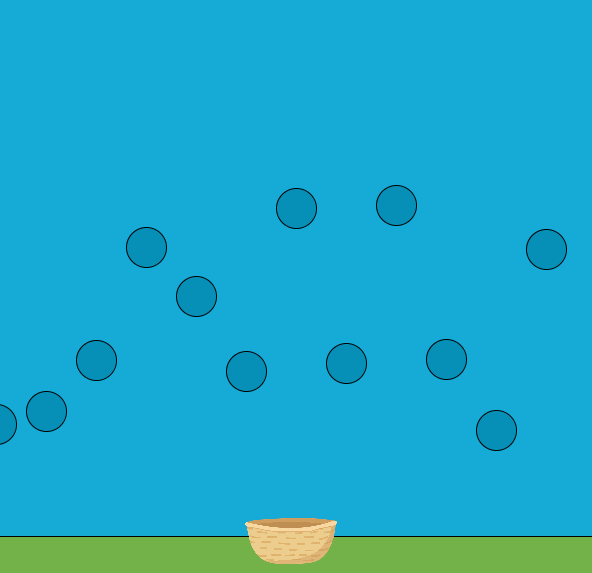
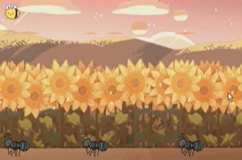
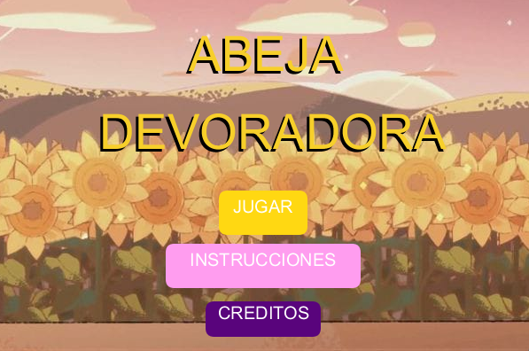

Este trabajo comenzó siendo un ejercicio para que nos pudieramos familiarizar con los codigos más básicos que processing tenía, y podíamos crear un dibujo a gusto propio de forma geométrica.
 GithubEl primer trabajo trató de poder realizar unos créditos de la pelicula que eligieramos, y en mi caso fue "Nemo", trabajar con imagenes y con tipos de fuentes por primera ves había sido una experiecnia y un aprendizaje que bueno.
 GithubEl segundo trabajo trataba de lograr una ilsuión optica a partir de los mismos códigos que fueramos probando, se torno un trabajo más de probar y ver las diferentes reacciones que daban los codigos al combinar o cambiarlos.
 GithubEl tercer trabajo del año fue crear nuestro primer juego interactivo, en grupo en mi propio caso. Fue tal vez el trabajo que en si me costó más, porque al fin y al cabo no logré concretarlo de la forma que lo deseaba, sudé frío.
 GithubEste trabajo básicamente era la introducción y el momento en que aprendimos lo que eran las clases en la programación, opte por trabajar con una imagen visual, un paisaje interactivo donde le usuario podía mover la abeja.
 GithubEl último juego, el final, trató de nuevamente recrear un juego pero con códigos aún más avanzados, con relación entre clases, colisiones, arreglos de objetos y más. Un trabajo complejo, pero satisfactorio con el ressultado. Mi juego trataba de una aveja que que debía recolectar 10 mieles y esquivar a los enemigos, que en este caso eran unos bichos. Basicamente fue un segumiento de mi trabajo Nº4.
 Github